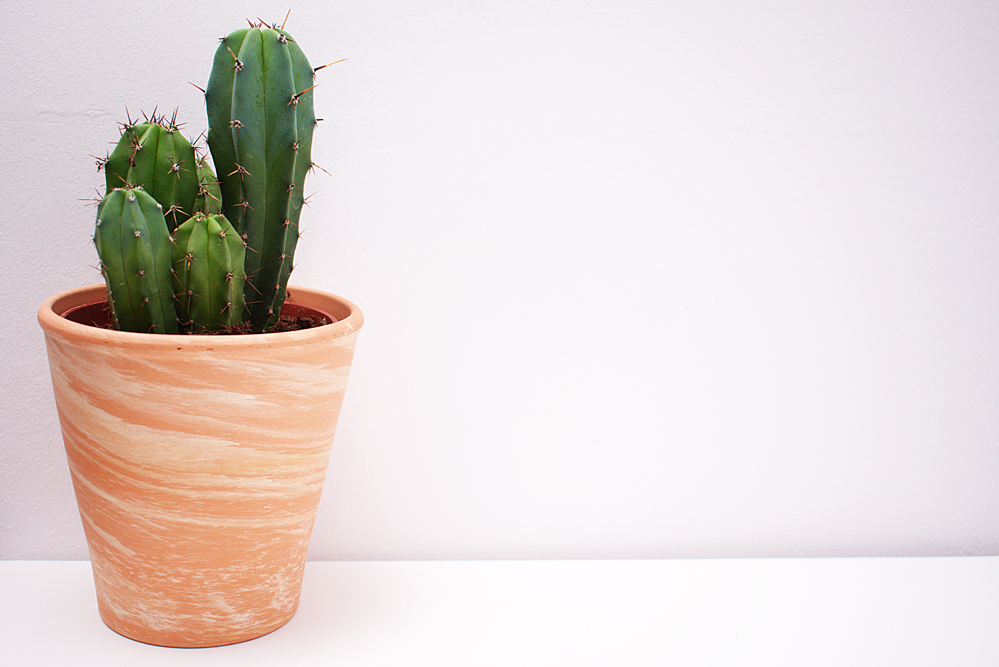
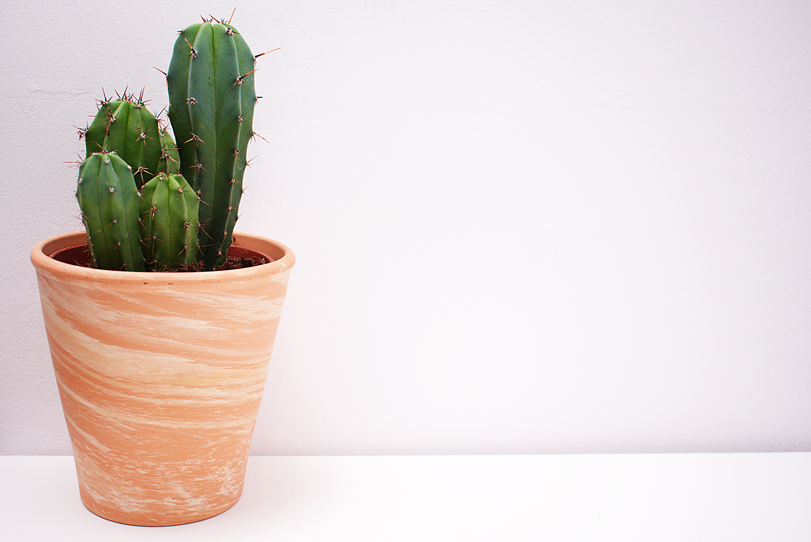

Hoe kunnen we je helpen?
Binnen Plantswap kan je kiezen voor de opties ruilen of doneren. Met de optie ruilen kies je uit onze beschikbare stekjes binnen de campus, geef je heel simpel je informatie en kan direct je nieuwe stekje ophalen!
Hoe werkt het?

Ruilen
Binnen Plantswap kan je kiezen voor de opties ruilen of doneren. Met de optie ruilen kies je uit onze beschikbare stekjes binnen de campus, geef je heel simpel je informatie en kan direct je nieuwe stekje ophalen! Je kan ook altijd een stekje of plantje doneren voor buurtbewoners.
Doneren
Binnen Plantswap kan je kiezen voor de opties ruilen of doneren. Met de optie ruilen kies je uit onze beschikbare stekjes binnen de campus, geef je heel simpel je informatie en kan direct je nieuwe stekje ophalen! Je kan ook altijd een stekje of plantje doneren voor buurtbewoners.
Onze Pijlers
Vitaliteit
Een vitaal persoon heeft een duidelijke wilskracht, beschikt over energie, lichamelijke kracht en weerbaarheid. Wij staan voor vitaliteit!
Duurzaamheid
Duurzame ontwikkeling is een ontwikkeling die tegemoetkomt aan de levensbehoeften van de huidige generatie, zonder die van de toekomstige generaties tekort te doen.
Samenwerken
Goed samenwerken is van doorslaggevend belang voor het behalen van de gewenste resultaten bij werk waar meerdere personen bij betrokken zijn.